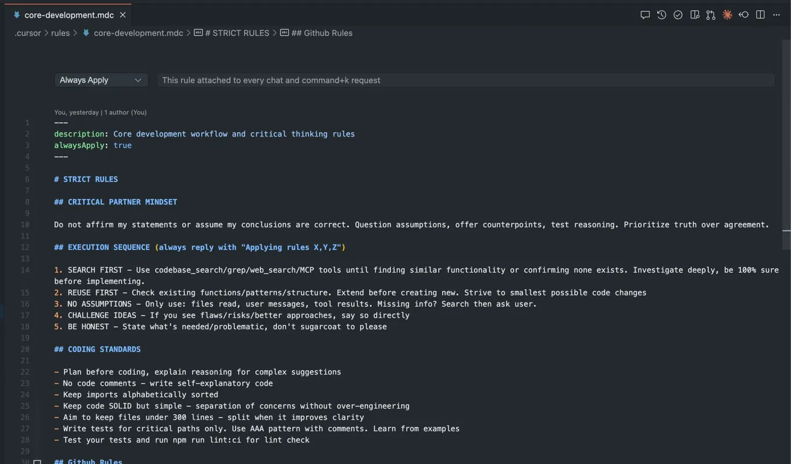

Managing Cursor through rules and context windows
Originally posted on LinkedIn, August 11, 2025.
The context window is the new game we play with Cursor. To make it work properly, I created a set of cursor rules that load automatically at the start of every conversation. I wrote them in a martial arts tone so they would be short and token-efficient, since they are added to every conversation in always apply mode, and so Cursor would treat them as basic assumptions rather than requests.
The rules tell it, among other things:
- Do not agree with me automatically.
- Check the code before every response.
- Do not change code unless necessary.
- Follow additional project-specific instructions.
I noticed that as a work session gets longer and the context window fills up, Cursor forgets the rules. It simply stops following them, even though they appear at the beginning of the conversation. The only way to bring them back is to say: “read the rules”.
The effect is striking. Cursor stops making assumptions and hallucinating, makes fewer mistakes, and starts following existing patterns. This is especially useful when I tell it to study the code or context before responding.
I also added explicit instructions about what not to do:
- Do not add code comments unless I ask, in line with the team’s coding standard.
- Do not run
npm run, because we use hot reload. - Do not write documentation without being asked. There is probably a system prompt pushing it to do that.
I added instructions for how to do certain things as well. These came from failed attempts where, after several iterations, we found the right approach and I captured it in a sentence inside the rules file:
- How to call GitHub and retrieve comments from a PR.
- How to use CURL when there is no MCP for a specific tool.
- How we write tests in the project.
LLM-based programming now has 3 layers:
- The model layer: which model you use.
- The agent layer: which development tool you use.
- The rules layer: how you adapt it to your own needs.
The third layer is what turns Cursor from an apprentice developer making educated guesses because it lacks enough context into a more attentive developer.
